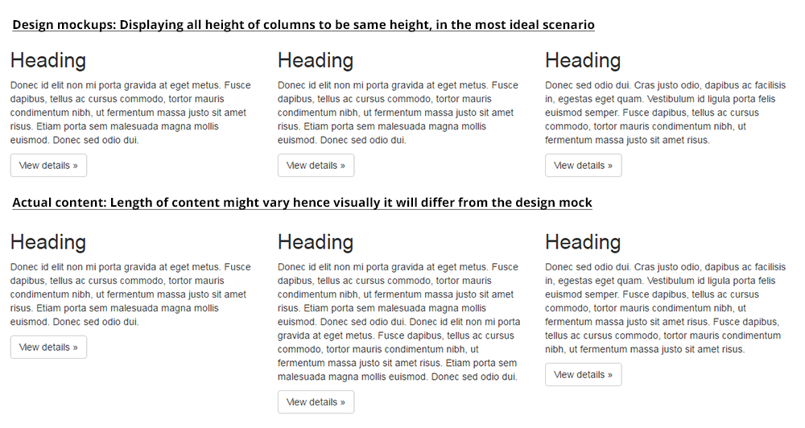

Designing for responsive web
Best practices for responsive designs
Graceful Degradation vs. Progressive Enhancement
Responsive web concept started out with "Graceful Degradation" as it is too costly to convert existing static websites to be responsive for the rise of mobile devices. However, mobile statistics is rising for web browsing hence Mobile-first (Progressive Enhancement) approach is introduced for website / web apps getting a fresh start.
- Designing from smaller devices upwards to larger ones will help to create mobile friendly version.
- Content displayed has been prioritised so smaller devices are showing the key information needed
- Visuals like graphic, animation are slowing enhanced into the site on larger devices as they have better support features eg. better bandwidth on WiFi, better devices specifications
As like many companies, projects usually kick off with the mockup done on desktop based thus having the need to follow the concept of "Graceful Degradation".
Pactice Thoughtful Reduction
In his book, “The Laws of Simplicity”, designer John Maeda introduces the concept of “thoughtful reduction.” He says:
“When in doubt, just remove. But be careful of what you remove.”
Responsive web design lies very much between design and front end code hence a lot of articles online is covering more on breakpoints and technical executions, I have sourced out articles which is of designing perspective below.
Here are some useful read:
When designing for responsive web...
Here are some pointers to remember:
-
Icon/graphic
When selecting websites' icons, usually I will recommand choosing from Fontello or Font awesome library to use in the mockup.
As they are font-based icons so they are easily controlled in terms of size, color and also they are "vector" based hence we will not need to prepare additional hi-resolution images for retina devices.
When possible such graphics (read section: "When would I use SVG?") should be done on Illustrator and bring over to Photoshop as Smart Object. As Adobe CC Suite has help to ease the exporting of SVG from Illustrator to Dreamweaver by simply copying the graphic and it converts to code directly.
-
Avoid enforcing fixed heights and widths
In a perfect world, all the content would be written and finalised before a design was created. During design stage, content placeholder length are usually choosen and trimmed to be the most ideal plesant looking in the mockups.
Continue to on next slide
-
Avoid enforcing fixed heights and widths
As responsive web will require the width and height of the website to be fluid hence design which fixed the width and height will impose issue on the development side which might cause end product to not have the optimal experience.
This is also important point for CMS driven website, where the website owner might have access to add on items onto the website and constraint will not be of an issue. Eg. like the navigation bar need to have its content architectured from the start so that there will be a structure to follow when adding sections onto the website.
The screenshot above will not allow CMS manager to add on top level navigation into the navigation bar due to space restriction hence they might need to have new content structured into the sub level.
-
Understanding of font stacks for web
Web safe fonts are fonts that are pre-installed by many operating systems. While not all systems have the same fonts installed, you can use a web safe font stack to choose several fonts that look similar, and are installed on the various systems that you want to support. If you want to use fonts other than ones pre-installed, as of CSS3, you can use Web Fonts which can be found from libraries like Google fonts which are licensed under open source licenses.
How the font stack work is as per below where they will search for Arial and if Arial is not found on the operating systems then it will look for Helvetica (only available on default for Mac) or finally if the first 2 font family is not found, it will use any sans serif font found on the operating systems.
font-family: Arial, Helvetica, sans-serif
-
Web Design styleguide
It is always encourage for designers to start off the project by creating a styleguide. When the initial mockups is submitted and near signing off, the styleguide can be shared with the developers so that they can convert the styleguide into codes.
Styleguide will usually contains:
- Font family
- Font sizes for the Heading tags
- Color palattes for the site
- Buttons (Primary/Secondary looks, states of buttons)
- and etc...
Continue to on next slide
-
Web Design styleguide
With the styleguide, it helps both design and development team keep the stylings consistent and help smoothen the transition with new team members into the projects.
Some samples of web design styleguide:
-
Inconsistency support across browsers
Design with elements such as rounded corners, drop-shadow and etc. might vary due to the support across the different browers (Internet Explorer, Firefox, Chrome, Safari). Especially older IE where I will usually drop rounded corners and drop-shadow.
Previous techniques to implement such visual effects for static website is too cumbersome to implement into responsive website context hence it will be good to note on this.
-
Design systems
- is built out of the core components of typography, layout, shape or form, and colour
- core components are used consistently across your product to create a cohesive feel, whether it's from one element to another, page to page, or viewport width to viewport width
- as we are designing for the web, hence it will make sense to have a design pattern/methodology close to how the webpages will be built: Atomic Web Design
For more in-depth reading:
- Overall guidelines/best practices for designing RWD:
- Top 10 website design mistakes
- PSD to HTML is dead
- Why your website doesn't look the same in every browser
- The ultimate guide to getting started in web design
- The five golden rules of responsive web design
- Design systems/methodology:
- Design systems
- Deep dive into Atomic Design
Examples of good responsive web design
Final bits.
- 16px for the body copy
- * Minimum font size of 16px — Apple recommends 17-22px, Google recommends 18-22px. (We've found 16px Georgia to be nice and readable.) * Call-to-action touch targets, such as buttons, should be at least 46px squared (Apple recommends 44px squared, Google recommends 48px squared — we're splitting the difference). * Avoid clustering several links together in your copy. It makes individual links very difficult to access.
- In web, we are not able to achieve kerning of letters but we can do tracking for the text copy. ** note: there is inconsistency across all browsers hence the spacings around the letters of the words will differ.
Sometimes there are limitation to quality of graphical/video assets, hence a need for maximum container width limit.

Design and cut up for web are recommended to be done on Photoshop as Photoshop has a "save for web". Quality for saving .jpg will only need to be set at 75%.
Naming of files like images, PDF and etc. for the web:
- Avoid Spaces in Your Filenames
- Use Only Small (Lowercase) Letters
- Put a Descriptive Title or At Least the Main Keywords from the Title in Your FilenameThis will help with Google search results. Eg. rather than naming <logo.jpg>, naming more specifically like <amiculum-digital-logo.jpg> will be better.
- Keep the Names Reasonably Short
- Separate the Words in Your Filenames with Hyphens
Where possible avoid using multiple layers "Blending mode" for visual treatment of graphic which requires transparency as .png files do not support blending modes.
Here is a method for saving out blending mode layer to .png:
- Copy the image you want to multiply. (CtrlA and CtrlC)
- Make a new 'Black' color layer and click 'add mask'.
- alt-click the Mask icon, so that you can enter to mask edit mode.
- Paste your 'multiply' images in the mask (b/w), and then invert it.
- You will have a black layer with your multiply material masked.
- You can adjust opacity of that layer to find best looking image. (30~40%?)
- If you save it as transparent PNG file, you are done.
It is not perfectly same with 'multiplied image', it will be somewhat dimmed, not that vivid enough, but it is quite useful when you need normal images or textures to apply on top of something.
Animation in responsive design
Animation and responsive design can sometimes feel like they’re at odds with each other. Animation often needs space to do its thing, but RWD tells us that the amount of space we’ll have available is going to change a lot.
Smaller viewports mean a smaller stage for your motion to play out on, and this tends to amplify any motion in your animation. Suddenly 100 pixels is really far and multiple moving parts can start looking like they’re battling for space. An effect that looked great on big viewports can become muddled and confusing when it’s reframed in a smaller space.
Workflow for designers and front-end developers shared at Asia CSS conference 2015.
Her talk covers a recommended workflow which will help to enhance the working between designers and developers coming from the experience of developers who usually tie up the last bits of projects and pitfalls discovered during development stage are usually too late for actions. Her presentation deck can be found here.